Play Minecraft.
Nothing in the way.
Nightfall is a calm launcher for Minecraft: Java Edition, built for max FPS. Modrinth and CurseForge built in, one copy of every mod on your disk, and share codes for your friends.

Everything you need, nothing you don't.
Built for players who want to press Play and have it just work, with the controls there when you want them.
Built for max FPS
A performance preset matched to your version (Sodium, Lithium, FerriteCore and more), tuned Java flags, and the launcher pauses itself while you play.
Modrinth and CurseForge
Search mods, modpacks, shaders, resource packs and datapacks. Dependencies install themselves, and .mrpack and CurseForge .zip packs import.
Shared mod storage
Every mod, resource pack and shader is stored once and linked into each instance that uses it. Ten packs with Sodium keep one copy.
Share codes and QR
Turn an instance into an NF1 code or a QR code. A friend pastes it and gets the same version, loader and mods.
Import from other launchers
Bring your instances over from Prism, MultiMC, CurseForge, the Modrinth App, ATLauncher, GDLauncher and more.
Every loader you need
Vanilla, snapshots, Fabric, Quilt, Forge and NeoForge, plus old alpha and beta versions and LiteLoader, each with the right Java.
Mod toggle in the game
Press the N button on the title screen, switch mods on or off, then Apply & Restart. You're back in a few seconds.
Crash help that explains
114 known crashes explained in plain words, with fixes in order. The crash checker also names the mod most likely to blame.
Shared game settings
Keybinds, controls and audio follow you across instances. FPS options like render distance stay with each pack, and any pack can keep its own settings.
Updates itself
Install once. New versions download quietly in the background and install when you close the launcher.
Windows and Linux
A Windows installer, plus an AppImage for Linux. Windows gets the most testing.
Accessible, in your language
High contrast, reduced motion, a dyslexia-friendly font, UI scaling and full keyboard navigation, in 23 languages.
A closer look at 0.2.9.
Real screenshots from the launcher and the game.
Modpacks without the mess


Make it yours
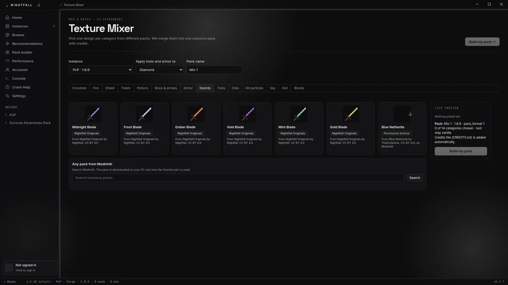
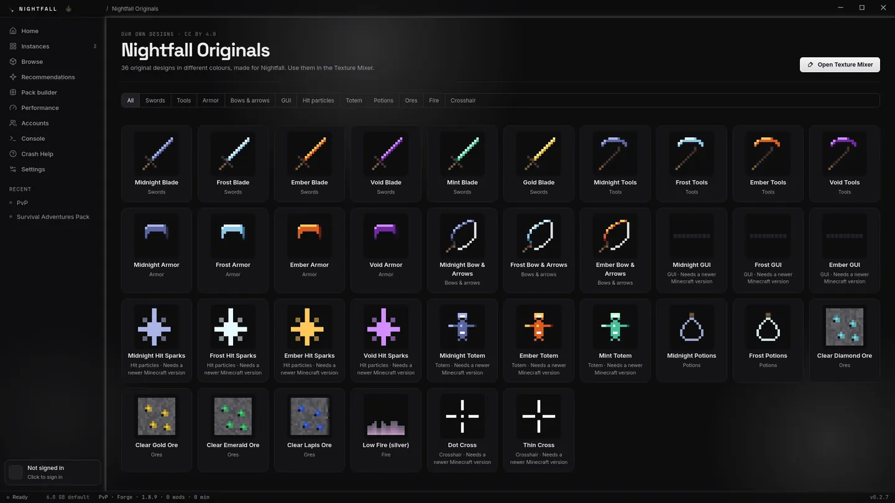


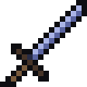
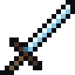
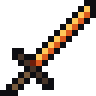
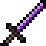
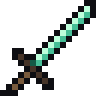
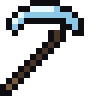
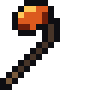
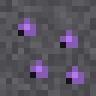
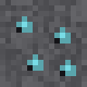
A few Nightfall Originals designs. Use them, change them, share them: just credit Nightfall (CC BY 4.0).
Handy tools


How Nightfall compares.
An honest look at the launchers people switch from. We only list what Nightfall really does.
| Feature | Nightfall | Official | Prism | Modrinth App | CurseForge | ATLauncher | GDLauncher |
|---|---|---|---|---|---|---|---|
| Microsoft sign-in | Yes* | Yes | Yes | Yes | Yes | Yes | Yes |
| Separate instances | Yes | Partial | Yes | Yes | Yes | Yes | Yes |
| Fabric and Quilt | Yes | — | Yes | Yes | Yes | Yes | Yes |
| Forge / NeoForge | Yes | — | Yes | Yes | Yes | Yes | Yes |
| Automatic Java per version | Yes | Yes | Yes | Yes | Yes | Yes | Yes |
| Modrinth mods with dependencies | Yes | — | Yes | Yes | — | Partial | Yes |
| CurseForge mods and modpacks | Yes | — | Yes | — | Yes | Yes | Yes |
| Modrinth modpacks (.mrpack) | Yes | — | Yes | Yes | — | Partial | Yes |
| One-click performance mods | Yes | — | — | — | — | — | — |
| Toggle mods from inside the game | Yes | — | — | — | — | — | — |
| Texture mixer | Yes | — | — | — | — | — | — |
| Crash viewer that explains the crash | Yes | — | Partial | Partial | — | — | Partial |
| Shared settings across instances | Yes | Partial | — | — | — | — | — |
| Launcher updates itself | Yes | Yes | Yes | Yes | Yes | Yes | Yes |
| No ads | Yes | Yes | Yes | — | — | Yes | Partial |
| Bedrock Edition | — | Yes | — | — | — | — | — |
* Other launchers' columns are our best reading of their public feature pages (October 2026) and may be out of date. Corrections are welcome on Discord. * Sign-in needs Mojang's approval of Nightfall first.
Ready when you are.
Download Nightfall, or come say hi on Discord. Bug reports, ideas and screenshots are all welcome.